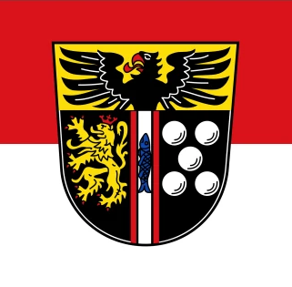

Site name
Kaiserslautern Chamber of Commerce
I can add to the top of the site the note like following: Here you will find information on the Kaiserslautern Chamber of Commerce and Industry in Kaiserslautern - Germany. For more information on specific services, please contact the chamber directly or visit the official website.
Purpose
This website provides general information about the Kaiserslautern Chamber of Commerce and Industry in Kaiserslautern. The Kaiserslautern Chamber of Commerce is a local organization of businesses and companies in Kaiserslautern with the intention to develop and further the interests of local companies and businesses in Germany. Chambers of Commerce main activities are, among others, safeguarding business interests and sharing business experiences and business interests, contact with governments, civil society, local media and the press and organzing trade shows and events. The goal of the site is to invite new businesses to develop the community. This website has no affiliation with the mentioned chamber or the commercial department of the Kaiserslautern Chamber of Commerce and Industry.
Branding
For the logo I could use one of these images:

Kaiserslautern Coat of Arms
Kaiserslautern district flag